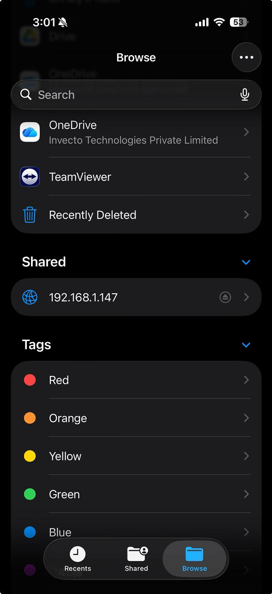

Self-Hosted NAS.
Turning old hardware into a high-performance local cloud.

Overview
A project in repurposing old laptop hardware into a dedicated Network Attached Storage system running Ubuntu Server with CasaOS as the management layer. The goal: a zero-subscription local cloud for file storage, media streaming, and local AI model hosting.

Stack
- OS: Ubuntu Server 24.04 LTS — headless, lightweight.
- Management: CasaOS for Docker-based app management.
- Storage: Samba shares accessible across all devices on the network.
- AI Ready: Configured for Ollama local model hosting.
Role: Solo Builder
Stack: Ubuntu Server, CasaOS, Docker, Samba, Ollama
Status: Shipped